relative cw complex with homotopy equivalence and lifting problem
1. Proposition
Let
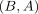
be a CW Pair and a serre fibration.
Suppose
a serre fibration.
Suppose 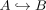
is a Homotopy equivalence, then every lifting problem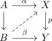
has a solution, unique up to homotopy relative to
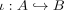
which projects to the constant homotopy under
2. Proof
2.1. existence
Since is a cofibration and homotopy equivalence it is a deformation retract (cf. cofibration and homotopy equivalence as deformation retract, CW Pair as cofibration) Let
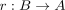
be a retractThen define
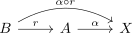
Then by definition
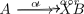
commutes
But
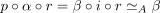
which is induced by a choice of defomration retraction
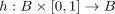
Consider the lifting problem
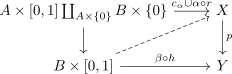
where
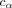
is the constant homotopy
This has a solution, as is a serre fibration (cf. todo>
Then restricting to the endpoint of the lift provides a solution to the lifting problem
2.2. uniqueness
Suppose there exists two solutions
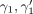
of the given lifting problem Then consider the lifting problewa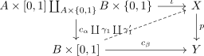
Observe that
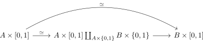
which is by two out of three for homotopy equivalences a homotopy equivalence and a cofibration
Hence by the existence there exists a lift, i.e. a homotopy
2.3. projection
Note that by construction